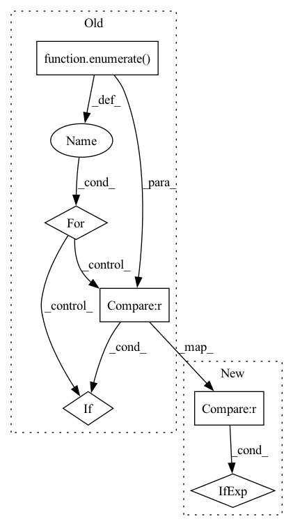

Pattern ID :35464
Before Change
dec_channels = channels[:0:-1] + [out_channels]
_dec_channels = []
for idx, out_channel in enumerate( dec_channels):
if idx == 0 :
_dec_channels.append(out_channel)
else:
_dec_channels.append(2 * out_channel)After Change
enc_channels = channels
dec_channels = channels[::-1] if out_channels is None else channels[:0:-1] + [out_channels]
dec_channels = [out_channel if idx == 0 else 2 * out_channel for idx, out_channel in enumerate(dec_channels)]
self.channels = channels
self.kernel_size, self.stride, self.dilated = kernel_size, stride, dilatedIn pattern: SUPERPATTERN
Frequency: 3
Non-data size: 6
Instances Fragment ID: 100749905
Project Name: tky823/dnn-based_source_separation
Commit Name: 20a0b712c83d1afcd25b5699592f80c27baa59bd
Time: 2021-12-04
Author: delta9guitar97@gmail.com
File Name: src/models/unet.py
M Class Name: UNet1d
N Class Name: UNet1d
M Method Name: __init__(9)
N Method Name: __init__(8)
M Parent Class: UNetBase
N Parent Class: UNetBase
M File Name: src/models/unet.py
N File Name: src/models/unet.py
M Start Line: 63
M End Line: 74
N Start Line: 56
N End Line: 72
Before Change
for b1 in range(1, total_bonds):
x, y = all_bonds[b1]
for i, b2 in enumerate( in_bonds[x]):
if all_bonds[b2][0] != y :
bgraph[b1, i] = b2
return fatoms, fbonds, agraph, bgraph, scopeAfter Change
agraph = torch.LongTensor([bonds + [0] * (max_num_bonds - len(bonds)) for bonds in in_bonds]) // zero padding
// Map each bond to all bonds going into that bond"s start atom
bgraph = [[]] + [[bond if all_bonds[bond][0] != a2 else 0 for bond in in_bonds[a1]] for a1, a2 in all_bonds[1:]]
bgraph = torch.LongTensor([bonds + [0] * (max_num_bonds - len(bonds)) for bonds in bgraph]) // zero padding
return fatoms, fbonds, agraph, bgraph, scope Fragment ID: 100749900
Project Name: aamini/chemprop
Commit Name: 64f98d60d13bc4bd7131ea4453b03163503cce0c
Time: 2018-10-02
Author: swansonk.14@gmail.com
File Name: mpn.py
M Class Name: AnonimousClass
N Class Name: AnonimousClass
M Method Name: mol2graph(2)
N Method Name: mol2graph(2)
M Parent Class:
N Parent Class:
M File Name: mpn.py
N File Name: mpn.py
M Start Line: 143
M End Line: 240
N Start Line: 222
N End Line: 232
Before Change
dec_channels = channels[:0:-1] + [out_channels]
_dec_channels = []
for idx, out_channel in enumerate( dec_channels):
if idx == 0 :
_dec_channels.append(out_channel)
else:
_dec_channels.append(2 * out_channel)After Change
enc_channels = channels
dec_channels = channels[::-1] if out_channels is None else channels[:0:-1] + [out_channels]
dec_channels = [out_channel if idx == 0 else 2 * out_channel for idx, out_channel in enumerate(dec_channels)]
self.channels = channels
self.kernel_size, self.stride, self.dilated = kernel_size, stride, dilated Fragment ID: 100749902
Project Name: tky823/dnn-based_source_separation
Commit Name: 20a0b712c83d1afcd25b5699592f80c27baa59bd
Time: 2021-12-04
Author: delta9guitar97@gmail.com
File Name: src/models/unet.py
M Class Name: UNet2d
N Class Name: UNet2d
M Method Name: __init__(9)
N Method Name: __init__(8)
M Parent Class: UNetBase
N Parent Class: UNetBase
M File Name: src/models/unet.py
N File Name: src/models/unet.py
M Start Line: 103
M End Line: 114
N Start Line: 104
N End Line: 120